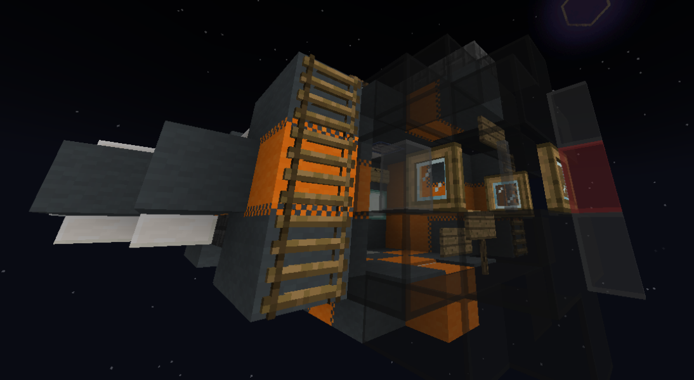

Home
Getting started
The Celestial Expanse can be a bit overwhelming to new players due to the sheer amount of stuff to do, places to see, etc. This guide is made to help new players get started on the server.
Prerequisites
There are a few things you should do before you start playing, firstly, there are custom items and blocks
that require a resource pack to use properly, secondly, a fabric modpack has been made by our
glorious leader
Getting to earth
You will first spawn at the OrbitHub, a station floating in the void, to get to earth just go through the portal. (this will be behind you when you first spawn)
Once you go through the portal, you will be in the air above earth with slow falling, you should use this opportunity to look around and see where would be a good landing spot.
Piloting your ship
One of the items you will start with will be a barrel called 'Structure Box', placing this will spawn in a LiFi Guppie starter ship. Note that once placed it can't be put back in the box so only do so when you are sure you want to.
The LiFi Guppie is a starfighter equipped with a shield and PDLC, to enter the cockpit stand on the gray carpet below the spruce trapdoor and press shift/crouch. This is an elevator, for information on how to control your ship, see the Signs / Controls page.
Getting off earth
Once you have gotten some better gear you may be tempted to go to another planet, you should first know which planet you want to go to, I recommend going to the Starmap as it will allow you to get a rough idea of the terrain of each planet, once decided refer to the orbit names table to get the planets orbit, this will be important when setting up your rift drive.
To travel between planets you require a rift drive, note that starfighters cannot use rift drives and you will need at least a cargoshuttle to use one, for more info on craft types and their different abilities see Craft types, However a guppie can easily be outfitted to function as a cargoshuttle by adding more wool. Once outfitted you will need to setup a rift drive and teleport sign.
Joining a town
The rules of the Celestial Expanse are such that unprotected chests/containers are fair game, and so joining/founding a town is recommended so that you can protect your items.
To join a town you will first need an invite, if you want to join a town you should ask on the #towns-and-nations channel on the discord server, if you are lucky a mayor will offer to invite you to their town.
Some towns don't require an invite, typing